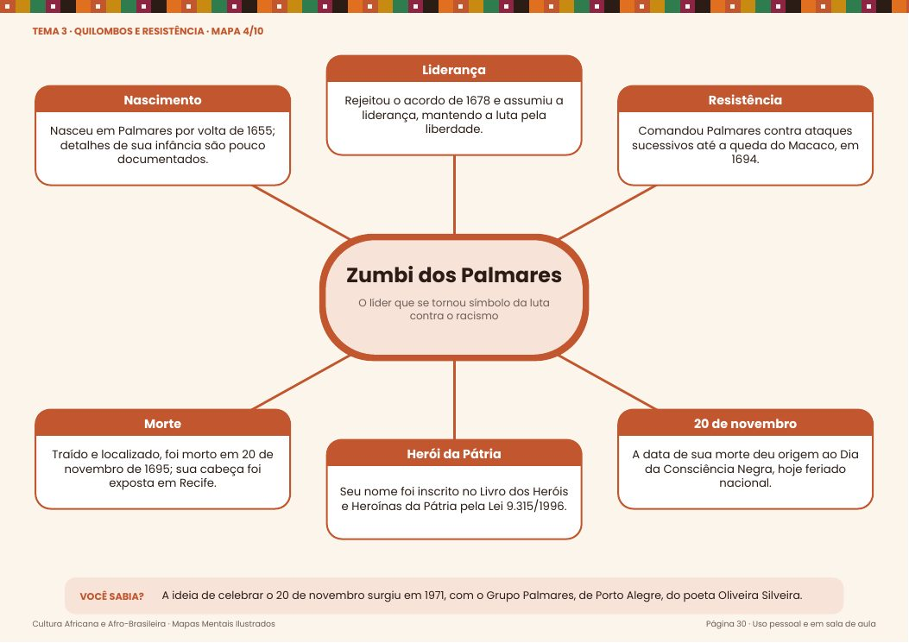
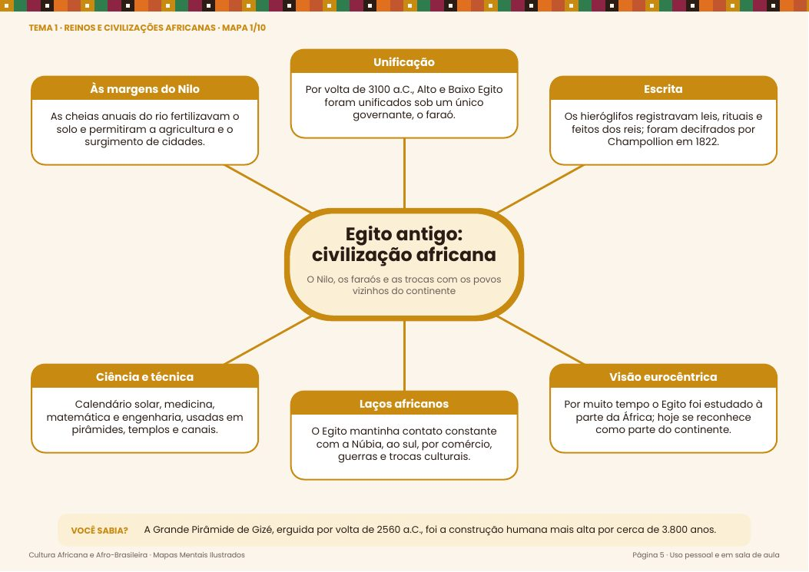
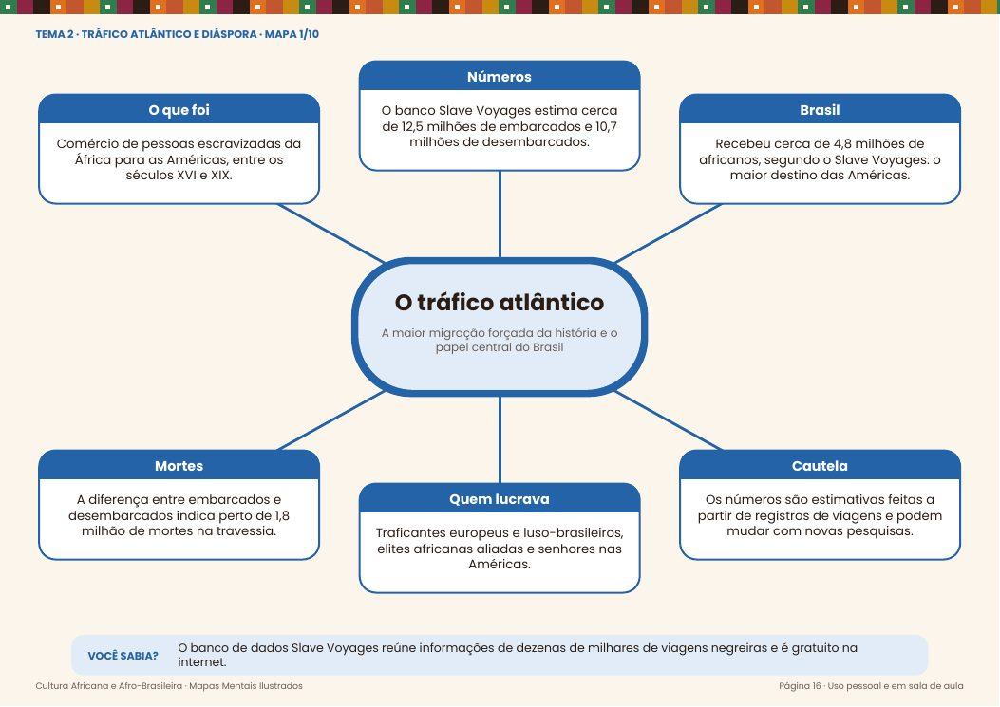
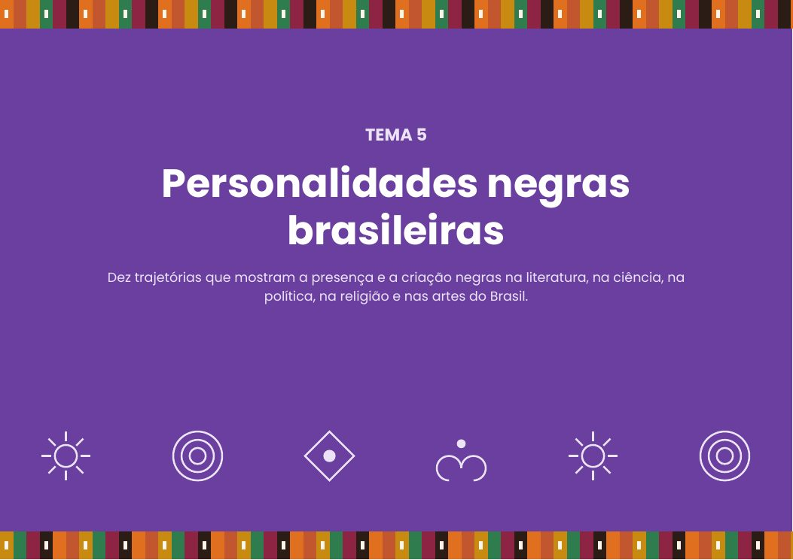
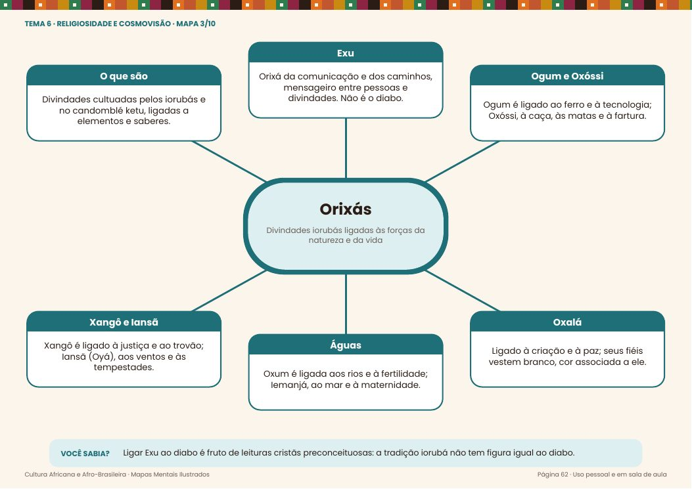
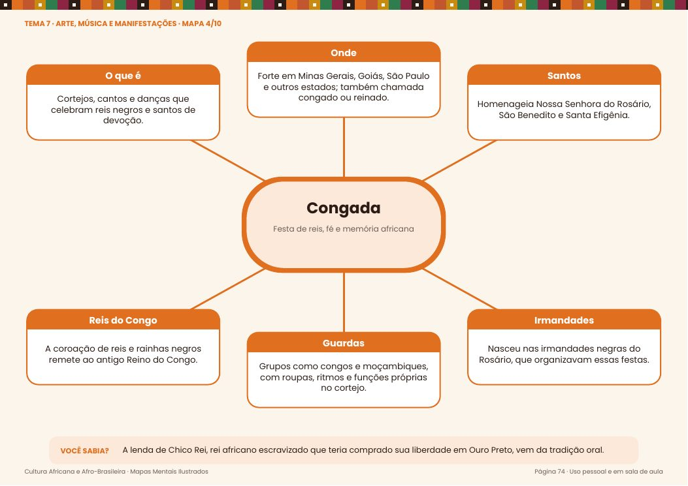
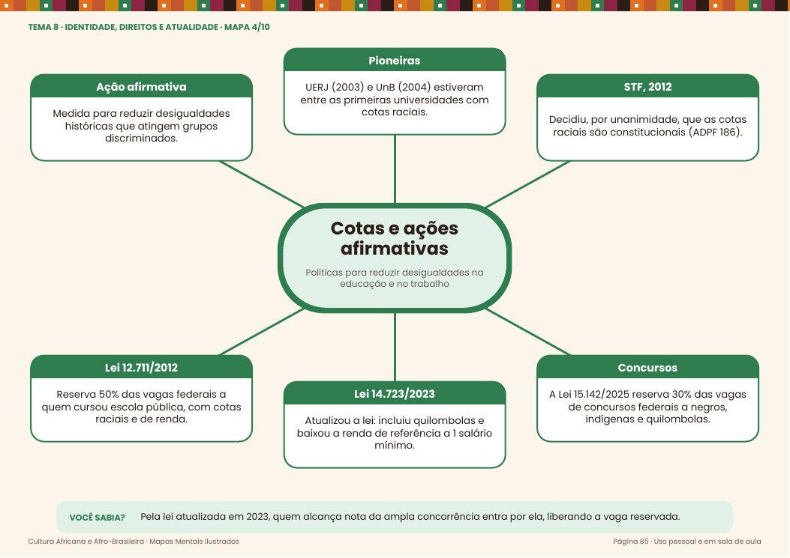
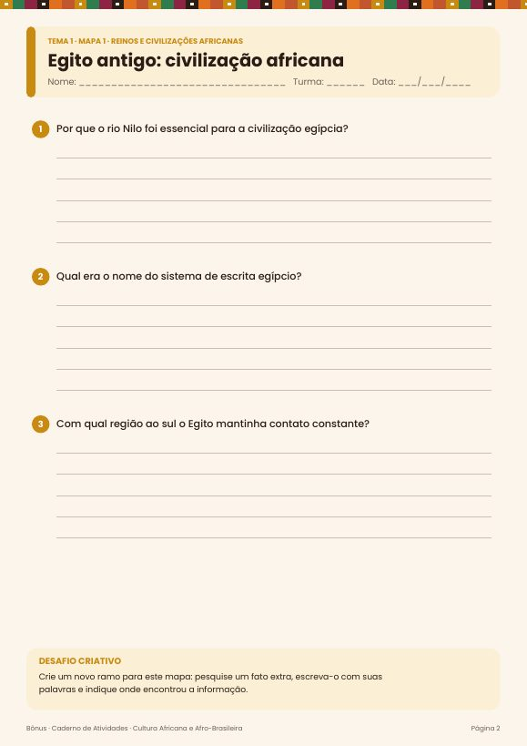

80 mapas mentais ilustrados, organizados em 8 temas, para imprimir ou projetar — com caderno de 240 atividades e gabarito.
QUERO O MATERIAL – R$ 10A Lei 10.639/2003 tornou obrigatório o ensino de História e Cultura Afro-Brasileira nas escolas, e desde 2024 o Dia da Consciência Negra é feriado nacional (Lei 14.759/2023). O conteúdo é rico — o tempo para preparar aula, nem sempre.
Cada mapa resume um tema em 6 ramos objetivos, com datas e leis conferidas.
Mapas coloridos em A4 paisagem, ótimos impressos ou na lousa digital.
Pontos debatidos pela historiografia vêm sinalizados, e as fontes estão no final do PDF.






Arraste para o lado →

🔒 Compra segura · Pix ou cartão · Acesso enviado por e-mail
Se o material não servir para você, peça o reembolso em até 7 dias após a compra.
Não. São arquivos em PDF enviados por e-mail logo após a confirmação do pagamento.
Foi pensado para o Ensino Fundamental II e o Ensino Médio, e pode ser adaptado para EJA e formação de professores.
Sim. Os mapas estão em A4 paisagem e funcionam impressos (colorido ou tons de cinza) ou projetados.
As datas e leis foram conferidas em fontes oficiais e acadêmicas, listadas no final do PDF. Temas em que há debate entre historiadores aparecem sinalizados.
O uso é pessoal e em sala de aula. Para compartilhar, cada professor deve adquirir o seu.
Sim, 7 dias. Se não gostar, solicite o reembolso dentro do prazo.